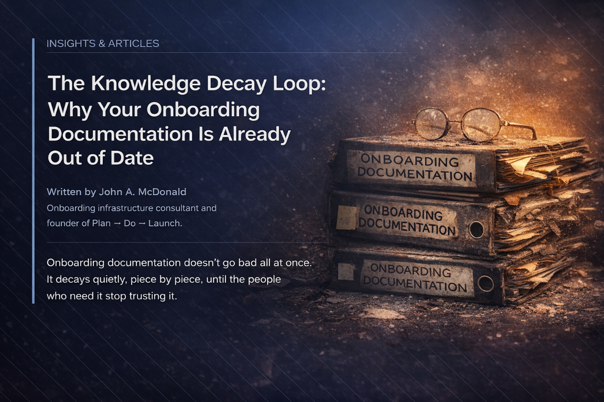
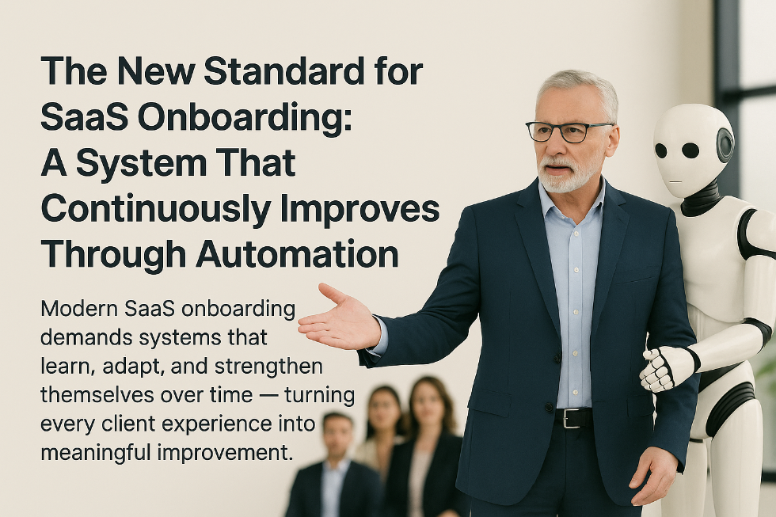
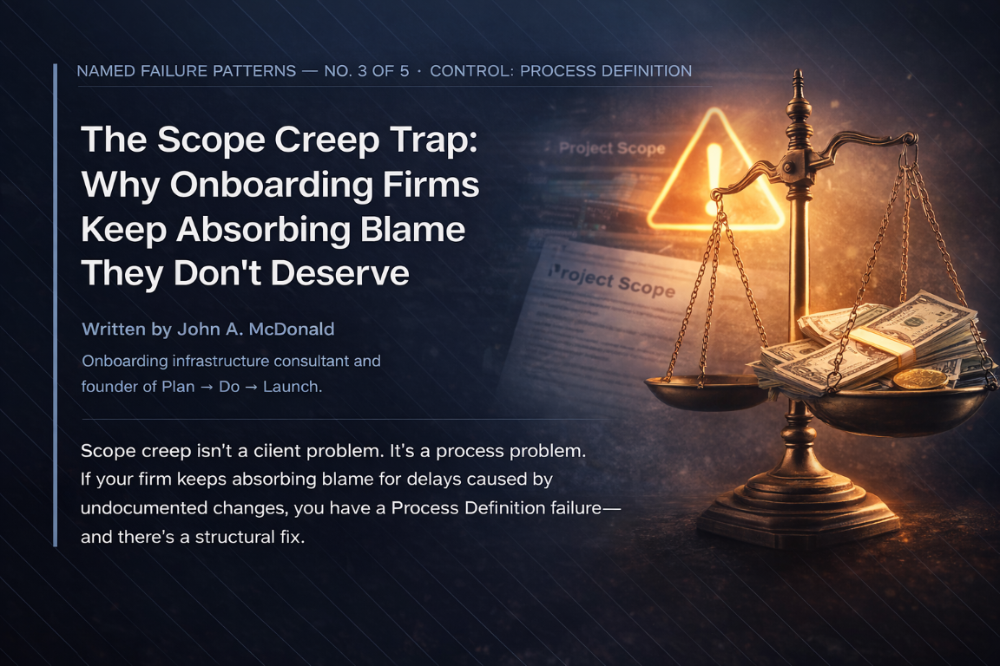

AI Makes Governed Onboarding Systems Great. It Can’t Fix an Ungoverned One. | PDL
AI is a multiplier, not a foundation. Until you govern your onboarding knowledge infrastructure with Canon Governance and the Five Controls, AI amplifies chaos — not quality.

Why Great People Can’t Save a Broken Onboarding System
Great people can’t fix a broken onboarding system. Learn why scalable SaaS onboarding requires structure—not heroics or executive oversight.

Hero Dependence: When Your Best Person Becomes Your Biggest Risk
When your best onboarding person leaves, how long to recover? If you don't know, you have a Staff Acceleration problem.
The Improvement Illusion: Why Your Onboarding Never Seems to Get Better
Your team does retrospectives. Six months later the same problem resurfaces. Feedback without a conversion mechanism is just a document nobody reads.

The Invisible Risk Problem: Why You're Always Surprised by Project Failures
Your last project failure wasn't a surprise — the signals were there. The problem is your infrastructure couldn't show them to you.

The Knowledge Decay Loop: Why Your Onboarding Documentation Is Already Out of Date
Your docs aren't wrong all at once — they drift until nobody trusts them. A documentation sprint won't fix it. Infrastructure does.

Canon Governance: Why Your Onboarding Knowledge Is Quietly Decaying | PDL
The Governance Decay Loop is running in most onboarding organizations right now. Documentation drifts, teams stop trusting it, knowledge concentrates in people — until someone leaves. Here's how to break the cycle.

The Five Controls That Determine Whether Your Onboarding Will Scale | PDL
Onboarding doesn't fail randomly. It fails at five specific control points. Learn the Five Controls framework that determines whether your onboarding infrastructure will hold — or fracture — under growth.

The Scope Creep Trap: Why Onboarding Firms Keep Absorbing Blame They Don't Deserve
Your team said yes, nobody wrote it down, and now it's your fault. Scope creep kills margin quietly until you have a system to stop it.